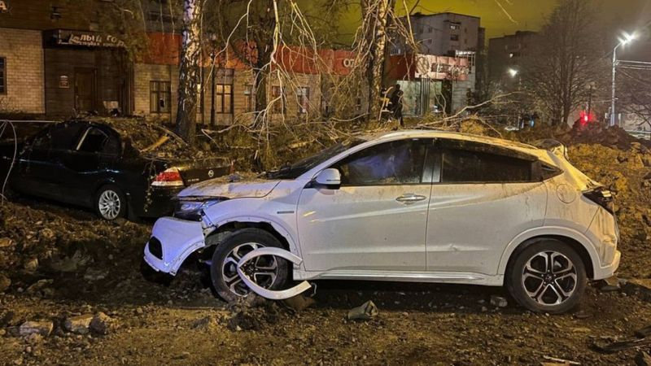

Guerra na Ucrânia: caça russo bombardeia 'por engano' cidade na própria Rússia
George Wright
BBC News
O Ministério da Defesa de Moscou informou que um caça russo bombardeou acidentalmente a cidade de Belgorod, perto da fronteira com a Ucrânia. O governador regional, Vyacheslav Gladkov, disse que a explosão havia aberto uma cratera enorme, de cerca de 20 metros de largura, no centro da cidade. Ainda segundo ele, duas mulheres ficaram feridas e vários prédios foram danificados.
De acordo com o ministério, um caça-bombardeiro Su-34 disparou acidentalmente a munição da aeronave. O incidente ocorreu às 22h15 (16h15 do horário de Brasília) de quinta-feira (20/04), informaram as agências de notícias russas, e uma investigação está em andamento. Fotos e vídeos publicados nas redes sociais mostram apartamentos danificados pela explosão, enquanto uma imagem parece mostrar um carro no telhado de um prédio. Belgorod — uma cidade de 370 mil habitantes — fica a cerca de 40 km da fronteira com a Ucrânia. Está localizada ao norte da segunda maior cidade ucraniana, Kharkiv, e seus moradores têm vivido com medo de bombardeios ucranianos desde o início da invasão russa no ano passado. Jatos russos também sobrevoam regularmente a cidade a caminho da Ucrânia.